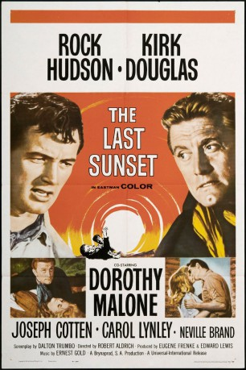

#1989 El Perdido
Alternativ: The Last Sunset
 
 IMDB-Wertung: 6.8 / 10
IMDB-Wertung: 6.8 / 10  Metascore: 0
Metascore: 0 
Revolverschütze O'Malley hat die Schwester des Sheriffs Stribling auf dem Gewissen. Ein Viehtreck nach Mexiko bringt die beiden verfeindeten Männer wieder zusammen. Der Gesetzeshüter hat zwar einen Haftbefehl gegen O'Malley in der Tasche, doch es befinden sich noch zwei Frauen in seiner Gesellschaft. Spannender und gefühlvoller Starwestern.
Jahr: 1961
Dauer: 112 Minuten
FSK: 12
Land: USA Studio: Universal InternationalTonspuren:
Untertitel:
Auflösung: 1080p (1920x1040) Größe: 9021 MB
Genre: Western, Liebe
Regisseur: Robert Aldrich
Drehbuch: Howard Rigsby, Dalton Trumbo
Soundtrack: Ernest Gold
Darsteller:
 Rock Hudson als Dana Stribling
Rock Hudson als Dana Stribling Kirk Douglas als Brendan 'Bren' O'Malley
Kirk Douglas als Brendan 'Bren' O'Malley Dorothy Malone als Belle Breckenridge
Dorothy Malone als Belle Breckenridge Joseph Cotten als John Breckenridge
Joseph Cotten als John Breckenridge- Carol Lynley als Melissa 'Missy' Breckenridge
 Neville Brand als Frank Hobbs
Neville Brand als Frank Hobbs Regis Toomey als Milton Wing
Regis Toomey als Milton Wing- James Westmoreland als Julesburg Kid
- Adam Williams als Calverton
 Jack Elam als Ed Hobbs
Jack Elam als Ed Hobbs- John Shay als Bowman
- Peter Helm als Man at Saloon , uncredited
- Jackboy als Dog , uncredited
- Margarito Luna als Jose , uncredited
- José Torvay als Rosario , uncredited
- Jorge Treviño als Mexican trader , uncredited
- Manuel Vergara 'Manver' als Man at Cock Fight , uncredited
Datei: X:\HD-Western-1960-1979\El Perdido (1961, FSK12, 1920x1040).mkv seit 16.09.2015
Festplatte: HD Eastern+Western
 Es gibt insgesamt 110 Filme in der Gruppe 'HD-Western-1960-1979'
Es gibt insgesamt 110 Filme in der Gruppe 'HD-Western-1960-1979'